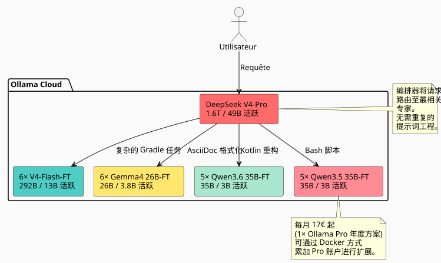

比 Claude 和 GPT 高出 27× 至 45× 的效率：由 23 个经过微调的 AI 专家组成的集群如何横扫市场
发布于 11 May 2026
当您在日常软件开发中使用LLM时，总会遇到同样的瓶颈：模型不了解*您的*代码库。它不知道您使用的是某种模式https://fr.wikipedia.org/wiki/Graphe_orient%C3%A9_acyclique[有向无环图], 这种 Gradle 约定，这种认识论分层在你们的https://fr.wikipedia.org/wiki/AsciiDoc[.adoc]. 然后，我们给他注入上下文，重复、修正、迭代。于是时间 — — 和金钱 — — 过去了。
我于是直接提出了这个问题：在我的工作空间上，一支能够*按我的风格*生成代码的微调模型团队需要花费多少？而且每次都不需要向它们解释？更重要的是：这种方法与传统的专有解决方案——Claude、GPT、Gemini、Grok——相比如何？
回答让我感到惊讶。比我想象的少得多。而在与行业巨头的成本效益比方面是无耻的。以下是完整细节。
问题：为什么是微调而非 RAG？
RAG 很好。 Mon knowledge graph 以及 mon compartimentage épistémique 可以工作。但 RAG 有一个根本缺陷：每次查询时，您必须重新注入相关上下文。您的提示会变长，延迟会激增，模型永远不会 n'内化' 您的模式 — — 它每次都像读取外部文档一样读取它们。
微调，或者说，是肌肉记忆。模型 知道 你在写作。build.gradle.kts`带有通过记录的任务`tasks.register, 你的`AGENTS.adoc`遵循一套标准化的语法，你的工作区被组织成区。它不需要被提醒。
|
微调不是 RAG 的替代。这是一个补充层。RAG 对于经常变化的数据仍然适用（日志、工单、最近的提交）。微调用于长期的 结构性 和 风格性 知识。 |
想法：专家舰队，不是单一模型
一个在我的整个工作空间上微调的单一模型已经不错了。但这不是最佳的。我的工作空间涵盖了非常不同的领域：
-
Gradle 插件（Kotlin、约定插件、组合构建）
-
DAG 引擎 (Kotlin, 规划, 执行)
-
LLM 代理 (Python, LangChain4j, RAG)
-
架构文档 (AsciiDoc, 治理)
-
基础设施/DevOps (Docker, GitHub Actions, CI/CD)
一个通用模型应该在任何地方都表现良好，但在任何地方都不会卓越。解决方案？一个专用模型舰队, 有一个编排器将每个请求路由到正确的专家。

总舰队：1 编排器 + 22 专家 = 23 模型. 每月推理成本是多少？17欧元/月Ollama Pro 年度订阅 — 通过累积账户可在配额超出时扩展，如 我的 Docker 多账户方法 所示。起价 17 欧元，根据实际需求每增加一个档位加 20 欧元。无浪费。
放大镜下的代码库：7,900 个文件，144,000 行
在估算训练成本之前，需要知道要训练什么。我严格地审计了我的工作区，排除了所有被 Git 忽略的内容：
----
----
----
----
build/ out/ node_modules/ runtimes/ .gradle/ dist/
target/ venv/ __pycache__/ .cache/ .tox/
----
这是仅跟踪文件的结果：
[cols="2,2"]
|===
|公制 |价值
|已跟踪的源文件 |**七千八百九十六** |代码行 (LOC) |**143 805** |Git 仓库 |**26** |主要语言 |Kotlin (1 903)，AsciiDoc (2 765)，Python (5 029)
|===
[IMPORTANT]
====
这些 5000+ 个 Python 文件包括`runtimes/`笔记本和实用脚本。 应用核心 (Gradle 插件、DAG 引擎、代理) 主要使用 Kotlin 和 AsciiDoc。
====
基于这个质量，我认为我可以生成一个合成数据集的**约1.7亿 tokens**通过指令式大语言模型（将代码库蒸馏为指令/回答对）。
=== 按专家类型划分的数据集详情
[source,text]
----
Dataset maître (généraliste V4-Flash) : 50M tokens
Expert Gradle/Build : 15M tokens
Expert Kotlin/DAG : 15M tokens
Expert AsciiDoc/Gouvernance: 15M tokens
Expert Agent/LLM/Python : 15M tokens
Expert Infra/CI-CD : 15M tokens
Micro-experts Qwen/Gemma : ~5M tokens chacun
----
== 模型的选择：100% MoE，零密集
正是在这里，建筑才真正变得高效。
一个 *dense* 模型在每个标记上激活所有其权重。一个 *MoE*（专家混合）模型仅激活其参数的一小部分。推理和微调的成本与参数数量成正比。**已激活**，而不是参数**存储**。
让我们看看今天 Ollama Cloud 上的市场在 MoE 领域提供了什么：
[cols="3,2,2,1,3"]
|===
|模型 |总参数 |已激活 |激活 |Ollama Cloud
|DeepSeek V4-Pro |1.6吨 |49B |3.1% |原生的 |深度求索 V4-Flash |292B |13B |4.5% |本地的 |Gemma 4 26B-A4B |26B |38亿 |14.6% |✅ 本地的 |Qwen3.6-35B-A3B |35B |3B |8.6% |❌ (尚未集成) |Qwen3.5-35B-A3B |35B |3B |8.6% |✅ 原生
|❌ Qwen3.5-27B |27B |27B |100% 密集 |已被消除 |❌ Qwen3.5-4B/9B |4B/9B |4B/9B |100% 密集 |被消除 |❌ Gemma 4 31B |31B |31B |100% 密集 |被消除
|🧪 Gemma 4 E2B/E4B |5B/8B |5B/8B |100% 密集 |验证管道
|===
[CAUTION]
====
激活比率是判别标准。一个 Gemma 4 26B-A4B 仅激活其 26B 参数中的 3.8B — 这比一个密集的 27B 少 7 倍，以获得相当的 coding agent 性能（LiveCodeBench v6 上为 77.1% 对 80%）。
====
=== 为什么我放弃密集模型
例外：Gemma 4 E2B 和 E4B。这两个模型在 Apache 2.0 许可证下，非常适合以较低成本测试和验证训练流水线。在 E2B 上运行 2-3 小时的成本不到 5 美元 — 如果数据集或超参数有问题，只需花费几美元就能知道。一旦流水线调试完成，它们甚至可以用于超微任务（简单的重新格式化，二分类）。但对于主力舰队的专家，我仍然坚持使用 MoE。这就是为什么：
.但不仅仅是：Gemma 4 E2B/E4B，精细匿名化的专家
[NOTE]
====
Google 将这些小模型设计为在原生工具调用方面具有竞争力 — 它们能够调用函数、操作正则表达式、搜索模式。在对匿名化示例（电子邮件、令牌、UUID、文件路径）进行微调后，它们会变成**数据集匿名器**超快。我们给他们一段原始文本，他们调用`sed`/`regex`通过调用 tool 并返回清理后的块。推理成本微不足道：5B 已激活，可在一台入门级 GPU 上运行。这些模型不是业务专家——它们是**熟练工人**在数据集的生产链中。
====
* 其训练显存（即使在 QLoRA 中）与……成正比**27B 总计**
* 其训练时间与...成正比**27B 已激活**
与 Qwen3.6-35B-A3B (MoE) 进行比较：
[cols="3,2,2,2"]
|===
| |Qwen3.5-27B (dense) |Qwen3.6-35B-A3B (MoE) |比率
|显存 QLoRA |~55 GB |~35 GB |1.6× |GPU小时 (8M 令牌) |约12小时 |约4小时 |**3×** |每次微调的成本 |~$24 |~$8 |**3×** |SWE-bench 已验证 |75.0% |73.4% |可比的
|===
MoE 的训练成本仅为 3× 更低，以达到接近 5% 的 agent-coding 性能。在 22 位专家中，差异达到数千欧元。
== 训练估计： 811 H100小时
我已按模型逐一拆解了训练成本，采用 4-bit QLoRA，使用上述描述的数据集。
=== 轻量级微专家MoE (3-3.8B 已激活)
这些模型每次运行需要一个 H100（80 GB）。模型在 Q4 时的显存约为 13-18 GB，为 LoRA 优化器状态和激活留出了充足的空间。
[cols="4,2,3,2"]
|===
|模型 |运行次数 |GPU-小时/运行 |总 GPU-h
|Gemma 4 26B-A4B-FT |6 |3.5 h |**21小时** |Qwen3.6-35B-A3B-FT |5 |4.0 h |**20:00** |Qwen3.5-35B-A3B-FT |5 |4.0 h |**20 点** |微小计 | | |*61 h*
|===
=== 执行官 V4-Flash (13B 已激活 / 292B 已存储)
DeepSeek V4-Flash 是一个特殊的情况。虽然每个 token 仅激活 13B，但完整模型在 Q4 下大约为 142 GB — 所有专家在训练期间必须保持在 VRAM 中。因此**3× H100**通过跑步以保持舒适。
[cols="4,2,3,3,2"]
|===
|模型 |数据集 |图形处理单元 |小时 |总GPU小时
|V4-Flash-Base 通用 |50M个令牌 |3倍 H100 |50 h |**150 小时** |V4-Flash 专家 ×5 |15M 令牌 |3× H100 |40 h |**600 小时** |执行层小计 | | | |*750 h*
|===
[cols="3,2,1"]
|===
|**总计** | |**811 H100-h**
|===
[NOTE]
====
作为比较，对 V4-Flash 进行全量微调（不使用 QLoRA，所有权重）将花费约 4,000 H100 小时，仅用于这 6 个模型。QLoRA 将成本降低了 5 倍。这是使项目在此规模下经济上可行的唯一方法。
====
=== GPU 价格：谁在2026年5月租用什么？
我基准测试了主要的H100租赁供应商。计量价格，适用于811小时。
[cols="3,2,2,2"]
|===
|出租方 |$/H100·h |总计 811小时 |可靠性
|**Vast.ai 现货** |$1.60 |**1 298美元** |★★☆ 可中断的 |**克鲁索云** |$2.00 |**$1,622** |★★★★ 可靠数据中心 |FluidStack |$1.98 |$1 606 |★★★ |TensorDock |$1.80 |$1 460 |★★☆ |RunPod |$2.29 |$1 857 |★★★ 良好的妥协 |CoreWeave |$2.25 |$1 825 |★★★★ 企业 |Lambda Labs |$2.49 |$2 019 |★★★★ 高级
|===
[TIP]
====
Vast.ai spot 是最便宜的，但您的运行可能随时被中断。对于训练，这是有风险的。Crusoe 每小时 $2.00 是性价比最高的可靠选择。相比 Vast，额外的 $324 费用换来了安心。
====
=== 墙钟时间：训练全部需要多长时间？
使用单个 3× H100 节点，31 次 runs（1 通用 + 30 专家）大约需要**12天**顺序地。 如果你并行租用 2 个节点，就会降到**6天**.
在实践中，微型专家可以在单独的节点上运行（每个节点一个 H100），而 V4-Flash 则占据了 3× H100 的节点。通过智能调度：
----
Nœud A (3× H100) : V4-Flash généraliste → V4-Flash experts ×5 (11 jours) Nœud B (1× H100) : Gemma 4 26B ×6 → Qwen 36 ×5 → Qwen 35 ×5 (6 jours)
7 天租赁，全部折叠。
== 推理：Ollama Cloud 上的 23 种模型，起价 17 欧元/月
这是建筑中最优雅的部分。
Ollama Cloud 允许上传私有模型（Pro 计划功能）。我的 22 个微调模型已被推送到`.gguf`在我的 Ollama 空间中，被标记为私有，并可通过标准 API 访问。
[plantuml, inference-flow, svg]
----
@startuml
skinparam backgroundColor #FAFAFA
skinparam defaultFontSize 12
|Utilisateur|
start
:Tâche de développement;
|Orkestrateur (V4-Pro)|
:Classifier la tâche\n(domaine + complexité);
if (Tâche simple,\nspécialisée ?) then (oui)
:Router vers micro-expert\n(Gemma 4 26B-A4B-FT\n ou Qwen3.6-35B-A3B-FT);
elseif (Tâche complexe,\nconventions fortes ?) then (oui)
:Router vers exécutif\n(V4-Flash-FT);
else (non)
:Résoudre avec V4-Pro\n(architecture, décision);
endif
|Modèle ciblé|
:Génère le code/output\n**dans mon style**,\n90%+ first-shot correct;
:Retourne la réponse;
stop
@enduml
----
=== 起步价为每月17欧元，如需则进行扩容
Ollama Pro 计划（年付 17 欧元/月）允许使用 3 个竞争的云模型。在这种架构下，我从不需要同时超过 2-3 位专家：
* 分类阶段（V4-Pro）占用 1 个槽位，几秒钟
* 目标专家占用1个插槽，生成其响应所需的时间
* 第三个槽位保留用于并行任务
如果使用量增加，我通过 xref:0120_cumuler_deux_abonnements_ollama_pro_docker_post.adoc[mon article sur le cumul d'abonnements] 中描述的 Docker 方法添加额外的 Pro 账户。没有每月 100 欧元的 Max 计划——我只添加我真正需要的。
唯一的限制因素是**GPU时间配额**Ollama 每月计划（专业版是免费计划的 50 倍）。对于我每天几百次的请求，这已经足够了。
[IMPORTANT]
====
调用 V4-Pro (49B 已激活) 与 Gemma 4 26B-A4B (3.8B 已激活) 的边际成本是**甚至对我来说：零**. 这是 Ollama 套餐吸收了计算差异. 我的唯一指标是延迟。
====
=== 路由在实践中
----
Volume de requêtes estimé : ~500/jour
├─ 50% → Gemma 4 26B-A4B-FT (micro, 3.8B actifs) │ Formatage AsciiDoc, scripts simples, conventions nommage │ ├─ 25% → V4-Flash-FT (exécutif, 13B actifs) │ Plugins Gradle, refactoring Kotlin, génération DAG │ ├─ 15% → Qwen 35B MoE-FT (micro, 3B actifs) │ Tâches intermédiaires, review de code, documentation │ └─ 10% → V4-Pro (orkestrateur, 49B actifs) Décisions architecturales, refactoring transverse, problèmes vraiment nouveaux
大部分流量通过小模型。大型模型仅在最后手段时才介入。
== 痛苦的比较：Claude, GPT, Gemini, Grok vs 我的舰队
正是这里，差距变得惊人。让我们看看同样的工作量（每天500个请求，平均~300个输入tokens + 2000个输出tokens）在2026年5月使用市场上的专有解决方案会花费多少。
=== Anthropic — Claude（2026年5月定价）
Anthropic 最近 *降低* 了其价格。类似 DeepSeek 和 Qwen 这样的开放权重解决方案的压力正在显现。
[cols="3,2,2,2,2"]
|===
|模型 |$/MTok |输出 $/MTok |成本/天 |**费用/月**
|Opus 4.7 (最智能的) |$5 |$25 |$25.75 |**$772** |十四行诗 4.6（平衡的） |$3 |$15 |$15.45 |**463美元** |Haiku 4.5 (最快) |$1 |$5 |$5.15 |**$154**
|===
[CAUTION]
====
这些费用是 *après* Anthropic 最近一次降价（2026 年 5 月）。在此之前，Opus 的价格为 $15/$75 每 MTok。对 open-weight 的恐惧是真实的。
====
即使是Claude最便宜的模型 — Haiku 4.5 到**154€/月**— 花费是我 Ollama Pro 订阅（17 欧元）的 9 倍。而且 Haiku 不了解我的代码库，不会按照我的风格生成，还需要系统性的 prompt engineering。
最聪明 — Opus 4.7 — 超预算至**772欧元/月**对于每天500个查询的适度规模。即**45倍更贵**那是我的解决方案
=== OpenAI — GPT (2026年5月定价)
[cols="3,2,2,2,2"]
|===
|模型 |$/MTok |(Empty) |每日成本 |**成本/月**
|GPT 5.5（最智能的） |$5 |$30 |$30.90 |**$927** |GPT 5.4 (标准) |$2.50 |$15 |$15.45 |**$463** |GPT 5.4 迷你 |$0.75 |$4.50 |$4.64 |**139美元**
|===
即使是 OpenAI 的 « 经济 » 模型 — GPT 5.4 Mini 月费 139 欧元 — 也要我订阅费的 8 倍，而这个模型对我约定一无所知，*什么*也不懂，而且还需要大量的提示工程。
GPT 5.5，他们的旗舰：**927欧元/月**. 为了在我的代码库上进行*zero-shot*。由于风格未掌握，每项任务需要2-3次迭代，真实的月度成本很容易翻倍。
=== 谷歌 Gemini (2026年5月价格)
[cols="3,2,2,2,2"]
|===
|模型 |$/MTok |Output $/MTok |每日成本 |**每月成本**
|Gemini 3.1 Pro (高) |$3.50 |$17.50 |$18.00 |**540美元** |Gemini 3.1 Pro |$2 |$10 |$10.30 |**$309** |Gemini 3 Flash |$0.30 |$1.50 |$1.54 |**$46**
|===
Gemini 3 Flash 每月 46 欧元在纯价格方面具有竞争力 — 但没有微调，它生成的代码是 « 通用 » 的。不是 *Cheroliv* 代码。
=== Grok — xAI (2026年5月价格)
[cols="3,2,2,2,2"]
|===
|模型 |$/MTok |$/MTok |每日成本 |**成本/月**
|Grok 4 |$4 |$16 |$16.48 |**$494** |Grok 4 Mini |$0.80 |$3.20 |$3.30 |**99美元**
|===
=== 微软 — Azure OpenAI（2026年5月定价）
Azure 与 OpenAI 直接 API 采用相同的定价，但会额外收取基础设施和网络费用。托管服务需额外支付约 10-20% 的费用。
[cols="3,2,2,2,2"]
|===
|模型 |$/MTok |输出 $/MTok |每日成本 |**每月成本**
|GPT 5.4 (Azure, Global) |$2.50 |$15 |$15.45 |**463美元** |GPT 5.4 + 基础设施 |额外费用 15% |额外费用 15% |$17.77 |**$533**
|===
[NOTE]
====
上面的费用针对 API，而不是聊天订阅 « Claude Pro à $20/mois, ChatGPT Plus à $20/mois 」。这里我们比较的是开发者使用方式 *développeur*，即通过 API 一天连续发送数百次请求以生成、重构、编写文档。面向大众的订阅在 500 次/天之前就会达到配额上限。
====
=== 最终比较表
[cols="3,2,2,2,2,2"]
|===
|解决方案 |代码库知识 |嵌入样式 |每月成本 |迭代 |**实际成本**
|**我的舰队 (Ollama Pro)** |✅ 已微调 |✅ 在重量中 |**17欧元** |0-1 |**17欧元** |Claude Opus 4.7 |❌ 零样本 |❌ 所需的提示 |$772 |2-3 |$1 500-2 300 |克劳德·俳句 4.5 |❌ Zero-shot |❌ 必要的提示 |$154 |3-4 |$460-615 |GPT 5.5 |❌ 零样本 |❌ 必要的提示 |$927 |2-3 |$1 854-2 781 |GPT 5.4 |零样本 |❌ 需要的提示 |$463 |2-3 |$925-1 390 |GPT 5.4 Mini |❌ 零样本 |❌ 必要的提示 |$139 |3-5 |$417-695 |Gemini 3.1 Pro 高级 |❌ 零样本 |❌ 需要提示 |$540 |2-3 |$1 080-1 620 |Grok 4 |(empty) |❌ 需要提示 |$494 |2-3 |$988-1 482 |**Azure GPT 5.4** |零样本 |❌ 需要提示 |$533 |2-3 |$1 066-1 600
|===
[plantuml, cost-comparison, svg]
----
@startuml
skinparam backgroundColor #FAFAFA
title 成本效益报告 — 我的车队 vs 市场（2026年5月）
rectangle "17欧元/月" as OURS #4ECDC4
rectangle "Opus 4.7\n772欧元" as OPUS #FF6B6B
rectangle "十四行诗 4.6\n463欧元" as SONNET #FF8B94
rectangle "GPT 5.5\n927€" as GPT #FFD93D
rectangle "Gemini 3.1 Pro\n540€" as GEMINI #6C5CE7
rectangle "Grok 4\n494欧元" as GROK #A8E6CF
rectangle "俳句 4.5\n154欧元" as HAIKU #DFE6E9
rectangle "GPT 5.4 Mini\n139欧元" as MINI #B2BEC3
note bottom of OURS
Avec fine-tune intégré.
Zéro prompt engineering.
90%+ first-shot correct.
end note
@enduml
----
每月17欧元提供23名经过微调的AI专家。旗舰 Claude Opus 4.7 的费用是**贵45倍**为*mon*代码库提供较低质量。GPT 5.5 的成本**54倍更贵**. 即使是市场上最便宜的模型（Gemini Flash 46欧元）也要**2.7× 更多**不知道我的工作区。
裁决毫无争议：在 2026 年，在 MoE 架构上进行微调不仅仅是“更便宜”。这是效率因素的**27×至54×**关于成本与质量的比较，相较于专有解决方案。Anthropic、OpenAI、Google — 他们都清楚这一点，这就是为什么他们惊慌失措地降价。
== 效率因子：5-8× vs 单独使用 V4-Pro
比较两个极端。
=== 情景 A：仅使用 V4-Pro 处理全部
[cols="3,2"]
|===
|度量 |值
|对代码库的了解 |0 (零样本) |命名约定 |40-60% 首次尝试正确 |必要的 Prompt engineering |是的，系统的 |每任务的迭代次数 |2-3 |推理成本 |$100/月 (Ollama Max) |平均延迟 |~20 tok/s + 网络
|===
=== 场景 B：协调的 MoE 舰队
[cols="3,2"]
|===
|度量 |值
|对代码库的了解 |已集成（微调） |命名约定 |首次尝试正确率为90%-95% |提示工程 |不是（风格在权重中） |每项任务的迭代次数 |0-1 |推理成本 |$60/月 (3× Ollama Pro) |平均延迟 |~50 tok/s (轻量模型)
|===
[cols="4,2,2,2"]
|===
|尺寸 |仅 V4-Pro |舰队 MoE |因子
|月度云成本 |$100 |**$60** |1.7× |要注入的上下文 |高 (prompt) |**零** |∞ |平均迭代 |2-3 |**0-1** |2-3× |感知延迟 |20 标记/秒 |50 tok/s |**2.5倍** |首次射击正确 |50% |90%+ |**1.8×**
|===
**总效率因子：5-8×**— 在感知的开发者生产力方面。
[NOTE]
====
因子不是以 tokens 或美元来衡量的。它以「我花多少时间向模型解释它本来就该知道的事情」来衡量。随着微调模型的使用，这一时间趋近于零。
====
== 完整预算：一次性投资，一个荒唐的套餐
[cols="3,2"]
|===
|职位 |金额
|训练 GPU (811 H100-h, Crusoe $2/h) |**$1,622** |合成数据集生成 (API LLM) |**400美元** |推理（Ollama Pro 年费，$17/月） |**$204** |**第一年总计** |**$2 226** |**等效月度** |**$186** |**估算每次请求的成本** |< $0.01
|===
[plantuml, budget-breakdown, svg]
----
@startuml
skinparam backgroundColor #FAFAFA
rectangle "预算 第一年：$2 226" as Total #E8E8E8 {
rectangle "训练 GPU\n$1 622 (73%)" as Train #FF6B6B
rectangle "数据集\n蒸馏\n$400 (18%)" as Data #FFE66D
rectangle "Ollama Pro\n$204 (9%)" as Cloud #4ECDC4
}
note bottom of Total
$186/mois équivalent année 1.
Dès l'an 2 : $17/mois.
Amorti par ~$235 de CA
mensuel avec marge 95%.
end note
@enduml
----
$186/月 第一年,**$17/月**从第二年开始。Netflix 高级订阅的价格，针对一支全天候 24/7 可用的 23 名 AI 专家团队，他们能够 *按照我的风格* 编写代码，而我不需要向他们解释我的约定。
[plantuml, inference-flow, svg]
----
@startuml
skinparam backgroundColor #FAFAFA
skinparam defaultFontSize 12
|Utilisateur|
start
:Tâche de développement;
|Orkestrateur (V4-Pro)|
:Classifier la tâche\n(domaine + complexité);
if (Tâche simple,\nspécialisée ?) then (oui)
:Router vers micro-expert\n(Gemma 4 26B-A4B-FT\n ou Qwen3.6-35B-A3B-FT);
elseif (Tâche complexe,\nconventions fortes ?) then (oui)
:Router vers exécutif\n(V4-Flash-FT);
else (non)
:Résoudre avec V4-Pro\n(architecture, décision);
endif
|Modèle ciblé|
:Génère le code/output\n**dans mon style**,\n90%+ first-shot correct;
:Retourne la réponse;
stop
@enduml
----
使用 edster.cloud 及其约95%的利润率，盈亏平衡点为**额外营业额约为~$2 340**在一年内。实际操作：
* 1 软件试点任务 → $3 000-5 000 → 投资覆盖 + 利润
* 1次企业培训 → $5 000-10 000 → 舒适
* 隐式追加销售：'我的 AI 团队掌控我的软件工厂' → 商业差异化
从第二年起，培训不再需要付费（除非数据集更新）。年度成本降至**$204**($17/月). 成本价值比就像独角兽一样：几乎为零。
== 练习的限制
这仍然是一个 *拍脑袋的估计*。多个变量可能导致预算变化：
[cols="2,3"]
|===
|变量 |影响
|合成数据集的生成 |如果蒸馏 API 出错（出现幻觉、配对格式错误），则需要人工时间进行整理。隐藏成本。 |配额 GPU时间 Ollama |如果使用量超过专业计划的配额，则需要升级或切换到专用 GPU。 |fine-tunes的有效质量 |一次失败的微调 → 需要重做。真正的风险在于超参数，而不是GPU的位置。 |模型的快速演变 |Qwen3.6/Gemma 4 发布于不到一个月前。六个月后，下一代将会更好且微调成本更低。
|===
[WARNING]
====
不要在没有先在*单个*微型模型上测试流水线的情况下进行811小时的训练。在Qwen 35B-A3B上进行3-4小时的运行成本为$8。如果数据集有问题，您将在花费$8后发现，而不是花费$1 622。
====
== 结论：微调已成为一种可负担的奢侈品
一年前，微调一个 292B 参数的模型（即使使用 QLoRA）还属于研究范畴。如今，2026 年 5 月，这已成为独立开发者可行的项目：
* **811 H100-小时**培训 — $1 622 在 Crusoe
* **23个专业模型**已加载到 Ollama Cloud —**$17/月**
* **0 服务器，0 本地 GPU，0 基础设施维护**
民主化来自三个汇聚的因素：
1. **MoE 架构**— 它们能够高效地微调仅激活部分权重的模型
2. **Ollama Cloud的固定计划**— 将可变成本（按 token 计）转化为固定成本（订阅）
3. **高质量的 open-weight 模型**— DeepSeek V4, Qwen3.6, Gemma 4 采用 MIT/Apache 2.0 许可证
文明通过扩展我们能够无需思考即可执行的重要操作的数量而前进。
微调，就是这样：这是一种您委托给机器的操作，以便您不必再去想它。到了2026年，其成本低于雇佣一名初级开发者的月薪。
---
_文章发布于 {jbake-date}_
== 舰队微调模型
[cols="2,2,2,2,3"]
|===
|已启用大小 |数量 |基础模型 |领域 |数据集
|13B |1 |DeepSeek-V4-Flash-Base |通用工作区 |50M 词元 |13B |5 |DeepSeek-V4-Flash |Gradle, Kotlin, 有向无环图, 文档, 基础设施 |15M 标记 |3.8亿 |6 |Gemma 4 26B-A4B |微任务， 格式化， 脚本 |5M 词元 |3B |5 |Qwen3.6-35B-A3B |重构, 审查, 中间文档 |5M 令牌 |3B |5 |Qwen3.5-35B-A3B |遗留任务, 兼容性 |5M 标记
|===
== 资源
=== 开放权重模型在HuggingFace
* https://huggingface.co/deepseek-ai/DeepSeek-V4-Flash-Base[DeepSeek V4-Flash-Base — 292B 参数，MIT 许可证]
* https://huggingface.co/Qwen/Qwen3.6-35B-A3B[Qwen3.6-35B-A3B — 35B/3B 已激活，Apache 2.0 许可证]
* https://huggingface.co/Qwen/Qwen3.5-35B-A3B[Qwen3.5-35B-A3B — 35B/3B 已激活，许可证 Apache 2.0]
* https://huggingface.co/google/gemma-4-26B-A4B-it[Gemma 4 26B-A4B — 26B/3.8B 已激活，Apache 2.0 许可证]
=== 费率来源（2026年5月）
* https://ollama.com/pricing[Ollama Cloud 价格 — Pro 计划 $17/月（年付）]
* https://www.anthropic.com/pricing[Anthropic 定价 — Claude API (Opus 4.7 $5/$25，Sonnet 4.6 $3/$15，Haiku 4.5 $1/$5)]
* https://openai.com/api/pricing/[OpenAI 价格 — GPT API (GPT 5.5 $5/$30, GPT 5.4 $2.50/$15)]
* https://deepinfra.com/pricing[DeepInfra 定价 — GPU 实例 H100 $1.79/小时, B200 $2.79/小时]
* Vast.ai、Crusoe Cloud、FluidStack、TensorDock、RunPod、CoreWeave、Lambda Labs — 手动价格记录，日期为2026年5月
=== 官方公告
* https://qwen.ai/blog?id=qwen3.6-35b-a3b[官方公告 Qwen3.6-35B-A3B — Qwen博客]— 代理编码，Apache 2.0，262K 上下文
[cols="3,2,2,2,2"]
|===
|模型 |$/MTok |</think>
/MTok |成本/天 |**成本/月**
|Grok 4 |$4 |$16 |$16.48 |**494美元** |Grok 4 Mini |$0.80 |$3.20 |$3.30 |**$99**
|===
=== 微软 — Azure OpenAI (2026年5月价格)
Azure 采用与 OpenAI 直接 API 相同的定价，但会额外收取基础设施和网络费用。使用托管服务需要额外支付 10-20% 的费用。
[cols="3,2,2,2,2"]
|===
|模型 |$/MTok |(No output, as there is no French text provided to translate) |每日成本 |**每月成本**
|GPT 5.4（Azure，全球） |$2.50 |$15 |$15.45 |**$463** |GPT 5.4 + 基础设施 |额外成本 15% |额外成本 15% |$17.77 |**$533**
|===
[NOTE]
====
上述费用适用于 API，而非「聊天」订阅（Claude Pro 每月 20 美元，ChatGPT Plus 每月 20 美元）。这里我们比较的是 *开发者* 使用场景——即通过 API 一天发送数百次请求以生成、重构、编写文档。面向大众的订阅配额在每天 500 次请求之前就会达到上限。
====
=== 最终比较表
[cols="3,2,2,2,2,2"]
|===
|解决方案 |知识代码库 |集成样式 |每月成本 |迭代 |**实际成本**
|**我的舰队 (Ollama Pro)** |✅ 已微调 |✅ 在重量中 |**17欧元** |0-1 |**17欧元** |Claude Opus 4.7 |❌ 零样本 |❌ 必需的提示 |$772 |2-3 |$1 500-2 300 |Claude Haiku 4.5 |❌ 零样本 |❌ 需要提示 |$154 |3-4 |$460-615 |GPT 5.5 |❌ 零样本 |❌ 所需提示 |$927 |2-3 |$1 854-2 781 |GPT 5.4 |❌ Zero-shot |❌ 需要提示 |$463 |2-3 |$925-1 390 |GPT 5.4 Mini |❌ 零样本 |❌ 必需的提示 |$139 |3-5 |$417-695 |Gemini 3.1 Pro 高级 |❌ 零样本 |❌ 需要提示 |$540 |2-3 |$1 080-1 620 |Grok 4 |❌ 零样本 |❌ 必要的提示 |$494 |2-3 |$988-1 482 |**Azure GPT 5.4** |❌ Zero-shot |❌ 需要的提示 |$533 |2-3 |$1 066-1 600
|===
[plantuml, cost-comparison, svg]
----
@startuml
skinparam backgroundColor #FAFAFA
title 成本效益比——我的车队 vs 市场（2026年5月）
rectangle "17欧元/月" as OURS #4ECDC4
rectangle "Opus 4.7\n772欧元" as OPUS #FF6B6B
rectangle "Sonnet 4.6\n463€" as SONNET #FF8B94
rectangle "GPT 5.5\n927€" as GPT #FFD93D
rectangle "Gemini 3.1 Pro\n540 欧元" as GEMINI #6C5CE7
rectangle "Grok 4\n494€" as GROK #A8E6CF
rectangle "Haiku 4.5\n154欧元" as HAIKU #DFE6E9
rectangle "GPT 5.4 Mini\n139欧元" as MINI #B2BEC3
note bottom of OURS
Avec fine-tune intégré.
Zéro prompt engineering.
90%+ first-shot correct.
end note
@enduml
----
17欧元/月，针对 23 位经过微调的 AI 专家。旗舰 Claude Opus 4.7 的价格为**45倍更贵**为了在 *mon* 代码库上获得较低的质量。GPT 5.5 的费用**贵54倍**. 市场上最便宜的模型（Gemini Flash 售价 46 欧元）花费**2.7× 更多**不知我的工作区
裁决毫无争议：在2026年对MoE架构进行微调，不仅仅是‘更便宜’。这是一个效率因素的**27×到54×**在成本与质量方面相较于专有解决方案，Anthropic、OpenAI、Google——他们都清楚这一点，这就是他们惊慌失措地降价的原因。
== 效率因子：5-8× 与仅使用 V4-Pro
比较两个极端。
=== 方案 A：仅 V4-Pro 用于所有
[cols="3,2"]
|===
|公制 |价值
|对代码库的了解 |0 (零样本) |命名约定 |40-60% 首次尝试正确 |需要进行Prompt工程 |是的，系统的 |每任务迭代次数 |2-3 |推理成本 |$100/月 (Ollama Max) |平均延迟 |~20 tok/s + 网络
|===
=== 场景 B：编排的 MoE 舰队
[cols="3,2"]
|===
|公制 |值
|对代码库的了解 |集成的 (fine-tune) |命名约定 |90-95% 首次尝试正确 |提示工程 |不 （风格在权重中） |每任务迭代 |0-1 |推理成本 |$60/月 (3× Ollama Pro) |平均延迟 |~50 tok/s (轻量模型)
|===
[cols="4,2,2,2"]
|===
|维度 |仅 V4-Pro |舰队 MoE |因子
|月度云成本 |$100 |**60美元** |1.7× |待注入的上下文 |高 (prompt) |**零** |无穷大 |平均迭代次数 |2-3 |**0-1** |2-3× |感知延迟 |20 tok/s |50 tok/秒 |**2.5×** |First-shot correct |50% |90%+ |**1.8倍**
|===
**总体效率因子：5-8×**— 在开发者感受到的生产力方面
[NOTE]
====
因子不是用 tokens 或 美元来衡量的。它是用 « 我花在向模型解释它本应已知的内容的时间 » 来衡量的。使用微调模型时，这种时间趋近于零。
====
== 完整的预算：一次性投资，荒唐的套餐
[cols="3,2"]
|===
|岗位 |金额
|训练 GPU (811 H100 小时, Crusoe $2/小时) |**$1 622** |合成数据集生成（API LLM） |**400美元** |推理（Ollama Pro 年度，$17/月） |**$204** |**第一年总计** |**$2,226** |**等效月薪** |**$186** |**估算每个请求的成本** |< $0.01
|===
[plantuml, budget-breakdown, svg]
----
@startuml
skinparam backgroundColor #FAFAFA
rectangle "第1年预算：$2 226" as Total #E8E8E8 {
rectangle "训练 GPU\n$1 622 (73%)" as Train #FF6B6B
rectangle "数据集\n蒸馏\n$400 (18%)" as Data #FFE66D
rectangle "Ollama Pro\n$204 (9%)" as Cloud #4ECDC4
}
note bottom of Total
$186/mois équivalent année 1.
Dès l'an 2 : $17/mois.
Amorti par ~$235 de CA
mensuel avec marge 95%.
end note
@enduml
----
$186/月 第一年,**$17/月**从第二年起，Netflix高级订阅的价格，可让一支由23名全天候可用的AI专家组成的团队，按照我的风格编写代码，而我不需要向他们解释我的惯例。
=== 盈利能力的计算
使用 edster.cloud 及其约95%的利润率，盈亏平衡点为**~$2 340 的额外CA**在一年内。 在实践中：
* 1个软件试点任务 → $3 000-5 000 → 投资覆盖 + 利润
* 1 企业培训 → $5 000-10 000 → 舒适
* 隐式升销售： "我的AI团队掌控我的软件工厂" → 商业差异化
从第二年起，培训不再需要付费（除非更新数据集）。年费降至**$204**($17/月)。成本价值比就像独角兽一样：几乎为零。
== 练习的限制
这仍然只是一个 *湿手指估算*。多个变量可能会导致预算变化：
[cols="2,3"]
|===
|变量 |影响
|合成数据集的生成 |如果蒸馏 API 出错（产生幻觉、配对格式错误），需要人工时间进行筛选。隐藏成本。 |配额 GPU-time Ollama |如果使用量超过专业计划的配额，则需要升级或切换到专用GPU。 |微调的有效质量 |一次失败的微调 → 需要重做。真正的风险在于超参数，而不是 GPU 的位置。 |模型的快速演变 |Qwen3.6/Gemma 4 在不到一个月前发布。6 个月后，下一代将会更好且微调成本更低。
|===
[WARNING]
====
不要在未先在*单个*微型模型上测试管道的情况下进行811小时的训练。在Qwen 35B-A3B上运行3-4小时的成本为$8。如果数据集有问题，你只需花$8就能发现，而不是花$1 622。
====
== 结论：微调已成为一种可及的奢侈
一年前，对292B参数模型进行微调（即使使用QLoRA）仍属于研究范畴。如今，2026年5月，这对独立开发者来说已成为一个可行的项目：
* **811 H100-小时**de training — $1 622 在 Crusoe
* **23个专业模型**已加载到 Ollama Cloud —**$17/月**
* **0 服务器, 0 本地 GPU, 0 维护基础设施**
民主化来自三个汇聚的因素：
1. **MoE架构**— 它们能够有效地对仅激活部分权重的模型进行微调
2. **Ollama Cloud 的固定计划**— 它们将可变成本（每令牌）转化为固定成本（订阅）
3. **高质量的开放权重模型**— DeepSeek V4, Qwen3.6, Gemma 4 根据 MIT/Apache 2.0 许可证
文明通过扩展我们能够在不加思考的情况下执行的重要操作的数量来进步。
微调，就是这个意思：这是一种您把任务委托给机器的操作，从而不必再去想它。而在2026年，它的成本低于雇佣一名初级开发人员的月薪。
---
_文章发表于 {jbake-date}_
== 舰队微调模型
[cols="2,2,2,2,3"]
|===
|已启用的大小 |数量 |基础模型 |领域 |数据集
|13B |1 |DeepSeek-V4-Flash-Base |通用工作区 |50M 个标记 |13B |5 |DeepSeek-V4-Flash |Gradle, Kotlin, DAG, 文档, 基础设施 |1500万个标记 |3.8B |6 |Gemma 4 26B-A4B |微任务, 格式化, 脚本 |5M 个令牌 |3B |5 |Qwen3.6-35B-A3B |重构，审查，中间文档 |5M 令牌 |3B |5 |Qwen3.5-35B-A3B |任务遗留, 兼容性 |5M 标记
|===
== 资源
=== HuggingFace 上的开放权重模型
* https://huggingface.co/deepseek-ai/DeepSeek-V4-Flash-Base[DeepSeek V4-Flash-Base — 292B 参数，MIT 许可证]
* https://huggingface.co/Qwen/Qwen3.6-35B-A3B[Qwen3.6-35B-A3B — 35B/3B 已激活，Apache 2.0 许可证]
* https://huggingface.co/Qwen/Qwen3.5-35B-A3B[Qwen3.5-35B-A3B — 35B/3B 已激活，许可证 Apache 2.0]
* https://huggingface.co/google/gemma-4-26B-A4B-it[Gemma 4 26B-A4B — 26B/3.8B 已激活，Apache 2.0 许可证]
=== 费率来源（2026年5月）
* https://ollama.com/pricing[Ollama Cloud 定价 — 专业版计划 $17/月（年付）]
* https://www.anthropic.com/pricing[Anthropic — Claude API 定价 (Opus 4.7 $5/$25, Sonnet 4.6 $3/$15, Haiku 4.5 $1/$5)]
* https://openai.com/api/pricing/[OpenAI 定价 — GPT API (GPT 5.5 $5/$30, GPT 5.4 $2.50/$15)]
* https://deepinfra.com/pricing[DeepInfra 定价 — GPU 实例 H100 $1.79/小时, B200 $2.79/小时]
* Vast.ai、Crusoe Cloud、FluidStack、TensorDock、RunPod、CoreWeave、Lambda Labs — 手动价格清单，日期为2026年5月
=== 官方公告
* https://qwen.ai/blog?id=qwen3.6-35b-a3b[官方公告 Qwen3.6-35B-A3B — Qwen博客]— 代理编码，Apache 2.0，262K 上下文
----
以下是仅针对被追踪文件的结果：
[cols="2,2"]
|===
|指标 |值
|被追踪的源文件 |**7 896** |代码行数 (LOC) |**143 805** |Git 仓库 |**26** |主要语言 |Kotlin (1 903), AsciiDoc (2 765), Python (5 029)
|===
[IMPORTANT]
====
这 5,000 多个 Python 文件包括了`runtimes/`笔记本和实用脚本。应用程序核心（Gradle 插件、DAG 引擎、代理）主要使用 Kotlin 和 AsciiDoc 编写。
====
基于这些数据量，我认为我可以生成一个合成数据集，包含**~1.7 亿个 token**通过一个指令 LLM（将代码库蒸馏为指令/响应对）。
=== 按专家类型划分的数据集详情
[source,text]
----
Dataset maître (généraliste V4-Flash) : 50M tokens
Expert Gradle/Build : 15M tokens
Expert Kotlin/DAG : 15M tokens
Expert AsciiDoc/Gouvernance: 15M tokens
Expert Agent/LLM/Python : 15M tokens
Expert Infra/CI-CD : 15M tokens
Micro-experts Qwen/Gemma : ~5M tokens chacun
----
== 模型选择：100% MoE，零 dense
这就是该架构真正高效的地方。
*稠密* (dense) 模型在每个 token 时会激活所有权重。而 *MoE* (Mixture of Experts) 模型仅激活其参数的一小部分。推理以及微调的成本与参数量成正比**已激活**，而不是设置**存储**Please provide the text you would like me to translate.
让我们看看目前 Ollama Cloud 上市场提供的 MoE 方案：
[cols="3,2,2,1,3"]
|===
|模型 |总参数量 |已启用 |激活 |Ollama Cloud
|DeepSeek V4-Pro |1.6T |49B |3.1% |✅ 原生 |DeepSeek V4-Flash |292B |13B |4.5% |✅ 原生 |Gemma 4 26B-A4B |26B |3.8B |14.6% |✅ 原生 |Qwen3.6-35B-A3B |35B |3B |8.6% |❌ (尚未集成) |Qwen3.5-35B-A3B |35B |3B |8.6% |✅ 原生
|❌ Qwen3.5-27B |27B |27B |100% 密集 |已消除 |❌ Qwen3.5-4B/9B |4B/9B |4B/9B |100% 密集 |已消除 |❌ Gemma 4 31B |31B |31B |100% 密集 |已消除
|🧪 Gemma 4 E2B/E4B |5B/8B |5B/8B |100% 密集 |验证流水线
|===
[CAUTION]
====
激活率是关键的区分标准。一个 `Gemma 4 26B-A4B` 在其 26B 参数中仅激活 3.8B —— 这比稠密 27B 模型少 7 倍，但其 coding agent 性能相当（在 LiveCodeBench v6 上为 77.1% vs 80%）。
====
=== 为什么我放弃密集模型
例外情况是：Gemma 4 E2B 和 E4B。这两个采用 Apache 2.0 协议的模型非常适合以较低成本测试和验证训练流水线。在 E2B 上运行 2-3 小时的成本不到 5 美元 —— 如果数据集或超参数有问题，只需花费几美元就能发现。一旦流水线调试完成，它们甚至可以用于超微型任务（简单重新格式化、二分类）。但对于主舰队的专家级需求，我仍然倾向于使用 MoE。原因如下：
不仅如此：Gemma 4 E2B/E4B 是精细匿名化领域的专家
[NOTE]
====
Google 将这些小型模型设计为在原生工具调用（tool calling）方面具有竞争力 —— 它们能够调用函数、操作 `regex`、搜索模式。一旦针对脱敏示例（电子邮件、`tokens`、`UUIDs`、文件路径）进行微调，它们就会变成**数据集匿名化工具**超快速的。我们给它们一段纯文本块，它们会调用`sed`/`regex`通过 tool call 并返回清理后的数据块。推理成本极低：激活 5B 参数，单块入门级 GPU 即可运行。这些模型并非领域专家，而是**熟练工人**在数据集的生产链中。
====
* 其训练 VRAM（即使在 QLoRA 中）与以下因素成正比：**总计 27B**
* 其训练时间与...成正比**已激活 27B**
与一个 `Qwen3.6-35B-A3B` (MoE) 进行比较：
[cols="3,2,2,2"]
|===
| |Qwen3.5-27B (dense) |Qwen3.6-35B-A3B (MoE) |比例
|VRAM QLoRA |~55 GB |~35 GB |1.6× |GPU-小时 (8M tok) |约 12 小时 |约 4 小时 |**3×** |每次微调成本 |~$24 |~$8 |**3×** |SWE-bench 已验证 |75.0% |73.4% |可比的
|===
MoE 的训练成本低 3 倍，而代码智能体（agent-coding）的性能差距在 5% 以内。在 22 个专家模型的情况下，这一差距可达数千欧元。
== 训练预估：811 H100-小时
我按模型分摊了训练成本，采用了 4-bit QLoRA，并使用了上述数据集。
=== 轻量级微专家 MoE（激活 3-3.8B）
这些模型每次运行需要 1 张 H100 (80 GB)。Q4 量化模型的 VRAM 占用约为 13-18 GB，为 LoRA 优化器状态和激活值留出了充足的空间。
[cols="4,2,3,2"]
|===
|模型 |运行次数 |GPU-h/run |GPU 总时数
|Gemma 4 26B-A4B-FT |6 |3.5 h |**21 小时** |Qwen3.6-35B-A3B-FT |5 |4.0 h |**20 小时** |Qwen3.5-35B-A3B-FT |5 |4.0 h |**20 小时** |*微量小计* | | |*61 h*
|===
=== V4-Flash 执行级 (激活 13B / 存储 292B)
DeepSeek V4-Flash 是一个特例。尽管每个 token 仅激活 13B 参数，但 Q4 量化后的完整模型权重约 142 GB —— 在训练期间，所有专家都必须存在于 VRAM 中。因此需要**3× H100**每次运行以确保舒适。
[cols="4,2,3,3,2"]
|===
|模型 |数据集 |GPU |小时 |GPU 总时数
|通用型 V4-Flash-Base |50M tok |3× H100 |50 h |**150 小时** |V4-Flash 专家 ×5 |15M tok |3× H100 |40 h |**600 h** |*高管小计* | | | |*750 h*
|===
[cols="3,2,1"]
|===
|**总计** | |**811 H100-h**
|===
[NOTE]
====
作为对比，对 V4-Flash 进行全量微调（不使用 QLoRA，更新所有权重）仅这 6 个模型就将花费约 4,000 H100-h。QLoRA 将成本降低了 5 倍。这是使该项目在这种规模下在经济上可行性的唯一方法。
====
=== GPU 价格：2026 年 5 月谁在出租什么
我对主要的 H100 租赁商进行了基准测试。这是 811 小时的标价。
[cols="3,2,2,2"]
|===
|出租人 |$/H100·h |共 811h |可靠性
|**Vast.ai 竞价实例** |$1.60 |**$1 298** |★★☆ 可中断的 |**Crusoe Cloud** |$2.00 |**$1 622** |★★★★ 可靠的数据中心 |FluidStack |$1.98 |$1 606 |Please provide the French text you would like me to translate. |TensorDock |$1.80 |$1 460 |★★☆ |RunPod |$2.29 |$1 857 |★★★ 很好的折衷方案 |CoreWeave |$2.25 |$1 825 |★★★★ 企业 |Lambda Labs |$2.49 |$2 019 |★★★★ 高级版
|===
[TIP]
====
Vast.ai spot 最便宜，但你的运行可能会随时被中断。对于训练来说，这太冒险了。单价 $2.00/h 的 Crusoe 是性价比（可靠性/价格）最好的选择。相比 Vast 多出的 $324 成本是为了买个安心。
====
=== 实际运行时间（Wall-clock）：训练全部内容需要多长时间？
使用单个 3× H100 节点，这 31 次运行（1 个通用模型 + 30 个专家模型）大约需要**12 天**在顺序模式下。如果你并行租赁 2 个节点，则会降至**6 天**Please provide the text you would like me to translate.
在实践中，微专家（micro-experts）可以在独立的节点上运行（每个节点 1 个 `H100`），而 `V4-Flash` 则占用 `3× H100` 节点。通过智能调度：Nœud A (3× H100) : V4-Flash généraliste → V4-Flash experts ×5 (11 jours) Nœud B (1× H100) : Gemma 4 26B ×6 → Qwen 36 ×5 → Qwen 35 ×5 (6 jours)
租赁 7 天，全部折叠。
推理：Ollama Cloud 提供 23 个模型，每月 17 欧元起
这是该架构中最优雅的部分。
Ollama Cloud 允许上传私有模型（Pro 计划功能）。我的 22 个微调模型被推送至`.gguf`在我的 Ollama 空间中，被标记为私有，并可通过标准 API 访问。

起步价为 17€/月，根据需要再扩容
Ollama 专业计划（按年计费，每月 17 欧元）允许使用 3 个竞争的云模型。在这种架构中，我从未需要同时使用超过 2-3 个专家：
-
分类阶段 (
V4-Pro) 占用 1 个 slot，耗时几秒钟 -
目标专家在生成回答期间占用 1 个 slot
-
第 3 个 slot 保留用于并行任务
如果用量增加，我会通过 我关于叠加订阅的文章 中描述的 Docker 方法添加额外的 Pro 账户。不需要每月 100 欧元的 Max 方案 —— 我只添加真正需要的部分。
唯一的限制因素是GPU 时间配额Ollama 的月费（Pro 计划是免费计划的 50 倍）。对于我每天几百次请求的使用量来说，这已经绰绰有余了。
|
调用 V4-Pro（激活 49B）相对于 Gemma 4 26B-A4B（激活 3.8B）的边际成本是对我来说也是：零。这是由 Ollama 套餐承担了算力差额。我唯一的指标就是延迟。 |
路由实战
----
Volume de requêtes estimé : ~500/jour
├─ 50% → Gemma 4 26B-A4B-FT (micro, 3.8B actifs)
│ Formatage AsciiDoc, scripts simples, conventions nommage
│
├─ 25% → V4-Flash-FT (exécutif, 13B actifs)
│ Plugins Gradle, refactoring Kotlin, génération DAG
│
├─ 15% → Qwen 35B MoE-FT (micro, 3B actifs)
│ Tâches intermédiaires, review de code, documentation
│
└─ 10% → V4-Pro (orkestrateur, 49B actifs)
Décisions architecturales, refactoring transverse,
problèmes vraiment nouveaux
----
大部分流量由小模型处理。大模型仅在最后手段时才介入。
== 扎心的对比：Claude, GPT, Gemini, Grok 对比我的集群
这里就是差距变得巨大的地方。让我们看看在 2026 年 5 月，使用市场上的商业闭源方案，相同的工作量（每天 500 次请求，平均输入 ~300 tokens + 输出 2,000 tokens）将需要多少费用。
=== Anthropic — Claude（2026年5月价格）
Anthropic 最近*降低*了价格。来自 DeepSeek 和 Qwen 等开放权重方案的压力正日益凸显。
[cols="3,2,2,2,2"]
|===
|模型 |$/MTok |$/MTok |每日成本 |**每月成本**
|Opus 4.7 (最智能) |$5 |$25 |$25.75 |**772 美元** |Sonnet 4.6 (均衡) |$3 |$15 |$15.45 |**463美元** |Haiku 4.5（最快） |$1 |$5 |$5.15 |**$154**
|===
[CAUTION]
====
这些价格是在 Anthropic 最近一次降价（2026 年 5 月）*之后*的。在此之前，Opus 的价格为每 MTok $15/$75。对开源权重（open-weight）的恐惧是真实存在的。
====
即使是 Claude 最便宜的模型 —— Haiku 4.5 也**154€/月**— 价格是我 17 欧元的 Ollama Pro 订阅费的 9 倍。而且 Haiku 不了解我的 codebase，不能按我的风格生成，并且需要持续地进行 prompt engineering。
最智能的 — `Opus 4.7` — 预算爆炸在**772€/月**对于每日 500 次请求的适度量。即**贵 45 倍**比我的解决方案。
=== OpenAI — GPT（2026年5月价格）
[cols="3,2,2,2,2"]
|===
|模型 |$/MTok |$/MTok |每日成本 |**每月费用**
|GPT 5.5 (最智能的) |$5 |$30 |$30.90 |**$927** |GPT 5.4 (标准版) |$2.50 |$15 |$15.45 |**$463** |GPT 5.4 Mini |$0.75 |$4.50 |$4.64 |**$139**
|===
即便 OpenAI 的“经济型”模型——每月 139 欧元的 `GPT 5.4 Mini`——其价格也是我订阅费用的 8 倍，而这个模型对我定义的约定*一无所知*，且需要繁重的提示词工程。
GPT 5.5，他们的旗舰产品：**927€/月**。用于对我代码库进行 *zero-shot*。由于风格未能掌控，每项任务需要 2-3 次迭代，实际的每月成本很容易翻倍。
=== Google — Gemini (2026年5月价格)
[cols="3,2,2,2,2"]
|===
|模型 |$/MTok |$/MTok |每日费用 |**每月费用**
|Gemini 3.1 Pro (High) |$3.50 |$17.50 |$18.00 |**$540** |Gemini 3.1 Pro |$2 |$10 |$10.30 |**$309** |Gemini 3 Flash |$0.30 |$1.50 |$1.54 |**46美元**
|===
Gemini 3 Flash 每月 46 欧元的定价在纯价格方面具有竞争力 —— 但如果没有经过微调 (fine-tune)，它生成的代码是“通用”的。而不是 *Cheroliv* 风格的代码。
=== Grok — xAI（2026年5月资费）
[cols="3,2,2,2,2"]
|===
|模型 |$/MTok |$/MTok |每日成本 |**每月费用**
|Grok 4 |$4 |$16 |$16.48 |**$494** |Grok 4 Mini |$0.80 |$3.20 |$3.30 |**$99**
|===
=== Microsoft — Azure OpenAI（2026年5月价格）
Azure 采用了与 OpenAI 直接 API 相同的定价，但额外收取基础设施和网络费用。托管服务的附加成本预计在 10-20% 之间。
[cols="3,2,2,2,2"]
|===
|模型 |$/MTok |$/MTok |每日成本 |**每月费用**
|GPT 5.4 (Azure, 全球) |$2.50 |$15 |$15.45 |**$463** |GPT 5.4 + 基础设施 |额外费用 15% |额外费用 15% |$17.77 |**533 美元**
|===
[NOTE]
====
上述价格适用于 API，而非“聊天”订阅（如每月 20 美元的 Claude Pro 或每月 20 美元的 ChatGPT Plus）。这里比较的是*开发者*用法，即每天通过 API 发起数百次请求以进行生成、重构或编写文档的场景。面向大众的订阅方案其配额在达到每天 500 次请求之前就早已耗尽。
====
=== 最终对比表
[cols="3,2,2,2,2,2"]
|===
|解决方案 |代码库知识 |内嵌样式 |每月费用 |迭代 |**实际成本**
|**我的机群 (Ollama Pro)** |✅ 已微调 |✅ 在权重中 |**17€** |0-1 |**17€** |Claude Opus 4.7 |❌ 零样本 |❌ 需要提示词 |$772 |2-3 |$1 500-2 300 |Claude Haiku 4.5 |❌ 零样本 |❌ 需要提示词 |$154 |3-4 |$460-615 |GPT 5.5 |❌ 零样本 |❌ 需要提示词 |$927 |2-3 |$1 854-2 781 |GPT 5.4 |❌ 零样本 |❌ 需要提示词 |$463 |2-3 |$925-1 390 |GPT 5.4 Mini |❌ 零样本 |❌ 需要提示词 |$139 |3-5 |$417-695 |Gemini 3.1 Pro High |❌ 零样本 |❌ 需要提示词 |$540 |2-3 |$1 080-1 620 |Grok 4 |❌ 零样本 |❌ 需要提示词 |$494 |2-3 |$988-1 482 |**Azure GPT 5.4** |❌ 零样本 |❌ 需要提示词 |$533 |2-3 |$1 066-1 600
|===
[plantuml, cost-comparison, svg]
----
@startuml
skinparam backgroundColor #FAFAFA
title 成本效率比 — 我的机群 vs 市场 (2026年5月)
rectangle "17€/月" as OURS #4ECDC4
rectangle "Opus 4.7\n772€" as OPUS #FF6B6B
rectangle "Sonnet 4.6\n463€" as SONNET #FF8B94
rectangle "GPT 5.5\n927€" as GPT #FFD93D
rectangle "Gemini 3.1 Pro\n540€" as GEMINI #6C5CE7
rectangle "Grok 4\n494€" as GROK #A8E6CF
rectangle "Haiku 4.5\n154€" as HAIKU #DFE6E9
rectangle "GPT 5.4 Mini\n139€" as MINI #B2BEC3
note bottom of OURS
内置微调。
无需提示词工程。
90%+ 首次尝试即正确。
end note
@enduml
----
每月 17 欧元可使用 23 位经过微调的 AI 专家。旗舰级 Claude Opus 4.7 的价格为**贵 45 倍**在*我的*代码库上产生较低的质量。GPT 5.5 的费用为**贵 54 倍**。即使是市场上最便宜的模型（Gemini Flash，价格为 46 欧元）也花费**2.7× plus**在不知道我的 `workspace` 的情况下。
结论不容置疑：到 2026 年，针对 MoE 架构的微调不仅是“更便宜”，而是一个效率提升因子，达到了**27× 至 54×**在性价比方面优于私有解决方案。Anthropic、OpenAI、Google —— 他们都心知肚明，这就是为什么他们正恐慌性地降低价格。
== 效率提升倍数：5-8× 与单独使用 `V4-Pro` 相比
让我们比较这两个极端。
=== 场景 A：仅使用 V4-Pro 处理所有事务
[cols="3,2"]
|===
|指标 |值
|代码库知识 |0 (零样本) |命名约定 |首轮正确率 40-60% |需要提示词工程 |是的，系统性的 |每项任务的迭代次数 |2-3 |推理成本 |$100/月 (Ollama Max) |平均延迟 |~20 tok/s + 网络
|===
=== 场景 B：编排的 MoE 集群
[cols="3,2"]
|===
|指标 |值
|代码库知识 |集成（微调） |命名约定 |90-95% 的首次尝试正确率 |提示词工程 |不（风格在权重中） |每项任务的迭代次数 |0-1 |推理成本 |$60/月 (3× Ollama Pro) |平均延迟 |~50 tok/s（轻量级模型）
|===
[cols="4,2,2,2"]
|===
|维度 |仅 V4-Pro |MoE 集群 |因子
|云每月费用 |$100 |**60美元** |1.7× |待注入的上下文 |高 (prompt) |**零** |∞ |平均迭代次数 |2-3 |**0-1** |2-3× |感知延迟 |20 tok/s |50 tok/s |**2.5×** |Please provide the text you would like me to translate. |50% |90%+ |**1.8×**
|===
**综合效率因子：5-8×**— 在感知到的开发者生产力方面。
[NOTE]
====
衡量标准不在于 token 或美元，而是在于“我需要花多少时间向模型解释它本应已经知道的事情”。对于经过微调的模型，这个时间趋于零。
====
== 完整预算：一次性投资，极低的一笔固定费用
[cols="3,2"]
|===
|岗位 |金额
|训练 GPU (`811 H100-h`, Crusoe `$2/h`) |**$1 622** |合成数据集生成 (LLM API) |**400美元** |推理 (Ollama Pro 年度订阅，$17/月) |**$204** |**一年级总计** |**$2 226** |**等值月费** |**186 美元** |**预估单次请求成本** |< $0.01
|===
[plantuml, budget-breakdown, svg]
----
@startuml
skinparam backgroundColor #FAFAFA
rectangle "第一年预算：$2 226" as Total #E8E8E8 {
rectangle "训练 GPU\n$1 622 (73%)" as Train #FF6B6B
rectangle "数据集\n蒸馏\n$400 (18%)" as Data #FFE66D
rectangle "Ollama Pro\n$204 (9%)" as Cloud #4ECDC4
}
note bottom of Total
第一年相当于 $186/月。
第二年起：$17/月。
每月约 $235 的营收即可回本，利润率 95%。
end note
@enduml
----
第一年每月 $186，**$17/月**从第 2 年起。一个 Netflix 高级会员的价格，就能换来一支由 23 位 24/7 全天候在岗的 AI 专家组成的团队，他们能以 *我的风格* 编写代码，而无需我向他们解释我的约定。
=== 盈利能力计算
凭借 edster.cloud 及其约 ~95% 的利润率，盈亏平衡点位于**~2 340 欧元的额外营业额**全年。实际操作中：
* 1 项软件指导任务 → $3 000-5 000 → 覆盖投资 + 利润
* 1 场企业培训 → $5 000-10 000 → 舒适
* 隐性追加销售（Upsell）：`"mon équipe d'IA maîtrise ma forge logicielle"` → 商业差异化点
从第 2 年起，无需再支付 training 费用（数据集更新除外）。年度费用降至**$204**（每月 17 美元）。成本价值比就像独角兽一样：几乎为零。
== 练习的局限性
这仍然是一个*粗略的估计*。有几个变量可能会导致预算波动：
[cols="2,3"]
|===
|变量 |影响
|合成数据集生成 |如果蒸馏 API 出错（幻觉、格式错误的配对），则需要人工时间进行筛选。这是隐藏成本。 |Ollama GPU 时间配额 |如果使用量超过 Pro 计划的配额，则需要升级套餐或切换到专用 GPU。 |微调的实际质量 |微调失败 → 重新开始。真正的风险在于超参数，而非 GPU 租赁。 |模型快速演进 |Qwen3.6/Gemma 4 发布还不到 < 1 个月。6 个月后，下一代模型将会更强，且微调成本更低。
|===
[WARNING]
====
不要在没有先用*单个*微模型测试流水线的情况下启动 811 小时的训练。在 Qwen 35B-A3B 上运行 3-4 小时仅需 $8。如果数据集很烂，你只需花 $8 就能知道，而不是花 $1 622。
====
== 结论：微调已成为一种触手可及的奢侈品
一年前，微调一个拥有 292B 参数的模型（即使使用 QLoRA）还属于研究领域。而现在，2026 年 5 月，这对于一名独立开发者来说已经是一个可行的项目：
* **811 H100-小时**训练 —— 在 Crusoe 花费 $1 622
* **23 个专业模型**上传至 Ollama Cloud —**$17/月**
* **0 台服务器，0 个本地 GPU，0 基础设施维护**
民主化源于三个汇聚的因素：
1. **MoE 架构**—— 能够高效地对仅有部分权重被激活的模型进行微调
2. **Ollama Cloud 的固定方案**— 将可变成本（按 token 计费）转换为固定成本（订阅制）
3. **高质量的 open-weight 模型**— `DeepSeek V4`、`Qwen3.6`、`Gemma 4` 采用 MIT/Apache 2.0 许可证
“文明的进步，在于增加我们无需思考即可执行的重要操作的数量。”
微调（fine-tune）正是如此：一项你委交给机器处理的操作，从此无需再为其操心。而且到 2026 年，它的成本将比一名月薪制的初级开发人员更低。
---
_文章发布于 {jbake-date}_
== 车队微调模型
[cols="2,2,2,2,3"]
|===
|已启用尺寸 |名称 |基础模型 |领域 |数据集
|13B |1 |DeepSeek-V4-Flash-Base |通用工作区 |50M tokens |13B |5 |DeepSeek-V4-Flash |Gradle, Kotlin, DAG, Doc, Infra |15M tokens |3.8B |6 |Gemma 4 26B-A4B |微任务、格式化、脚本 |5M tokens |3B |5 |Qwen3.6-35B-A3B |重构、评审、中间文档 |5M tokens |3B |5 |Qwen3.5-35B-A3B |旧版任务，兼容性 |500万 token
|===
== 资源
=== HuggingFace 上的 open-weight 模型
* https://huggingface.co/deepseek-ai/DeepSeek-V4-Flash-Base[DeepSeek V4-Flash-Base — 292B 参数，MIT 许可证]
* https://huggingface.co/Qwen/Qwen3.6-35B-A3B[Qwen3.6-35B-A3B — 35B/3B 激活，Apache 2.0 许可证]
* https://huggingface.co/Qwen/Qwen3.5-35B-A3B[Qwen3.5-35B-A3B — 35B/3B 激活，Apache 2.0 许可证]
* https://huggingface.co/google/gemma-4-26B-A4B-it[Gemma 4 26B-A4B — 26B/3.8B 已激活，Apache 2.0 许可证]
=== 价格来源（2026年5月）
* https://ollama.com/pricing[Ollama Cloud 价格 — Pro 方案 $17/月（年付）]
* https://www.anthropic.com/pricing[Anthropic 价格 — Claude API (`Opus 4.7 $5/$25`, `Sonnet 4.6 $3/$15`, `Haiku 4.5 $1/$5`)]
* https://openai.com/api/pricing/[OpenAI 价格 — GPT API (GPT 5.5 $5/$30, GPT 5.4 $2.50/$15)]
* https://deepinfra.com/pricing[DeepInfra 价格 — GPU 实例 H100 $1.79/h, B200 $2.79/h]
* Vast.ai, Crusoe Cloud, FluidStack, TensorDock, RunPod, CoreWeave, Lambda Labs — 手动价格统计，日期为 2026 年 5 月
=== 官方公告
* https://qwen.ai/blog?id=qwen3.6-35b-a3b[Qwen3.6-35B-A3B 官方公告 — Qwen 博客]— 代理编程 (agentic coding), Apache 2.0, 262K 上下文相关文章
31 May 2026
14 May 2026
12 May 2026